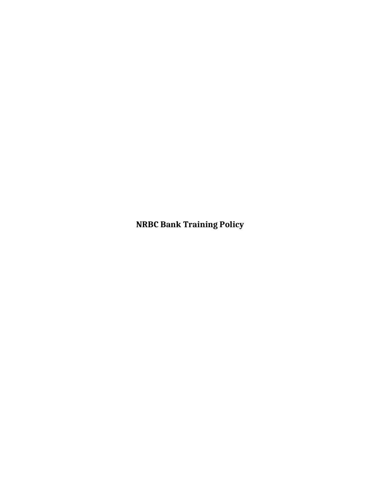
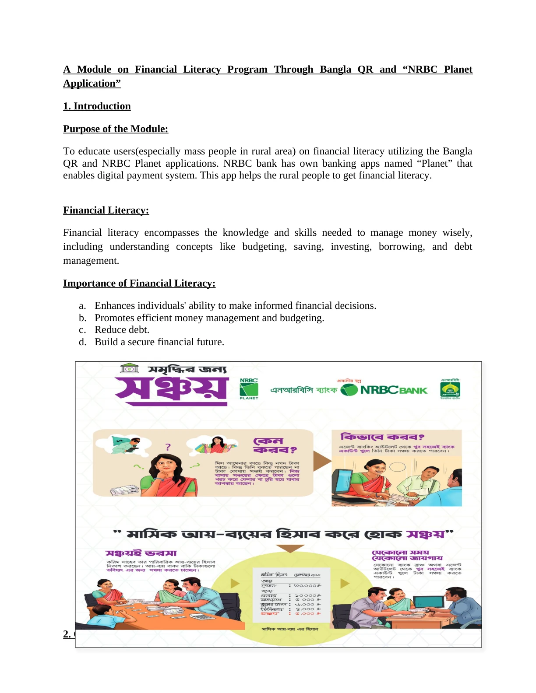
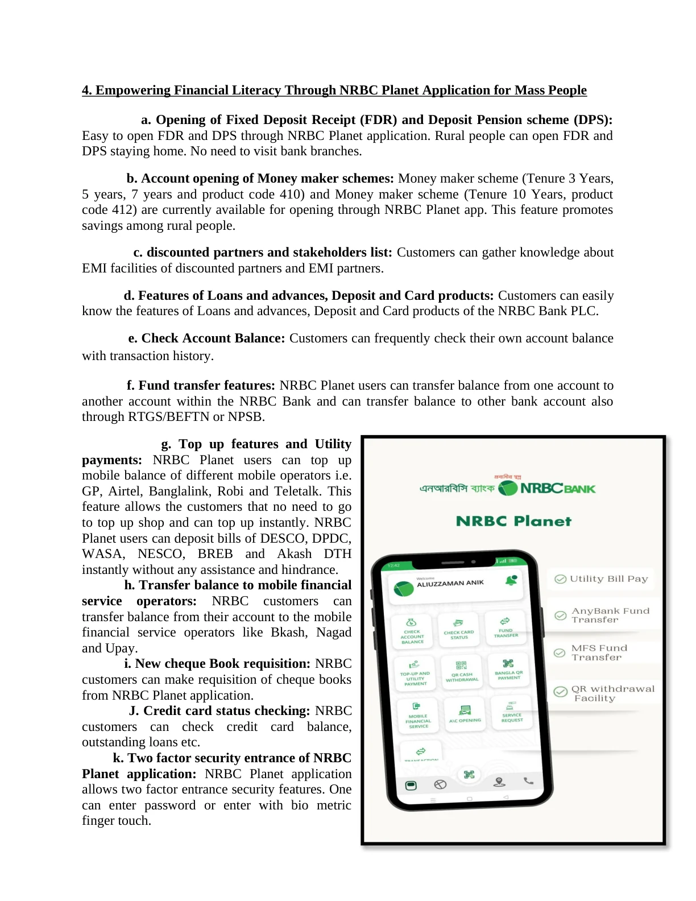
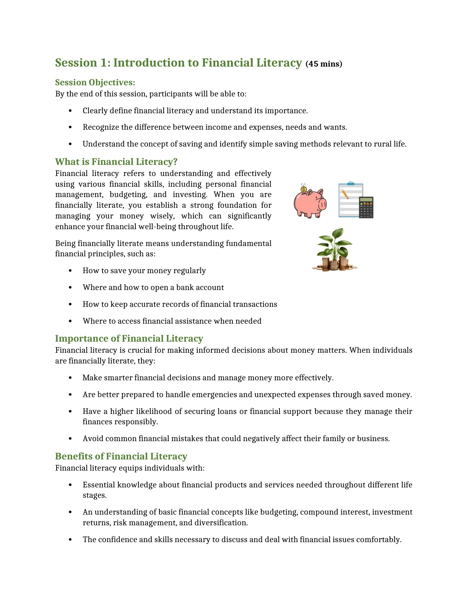
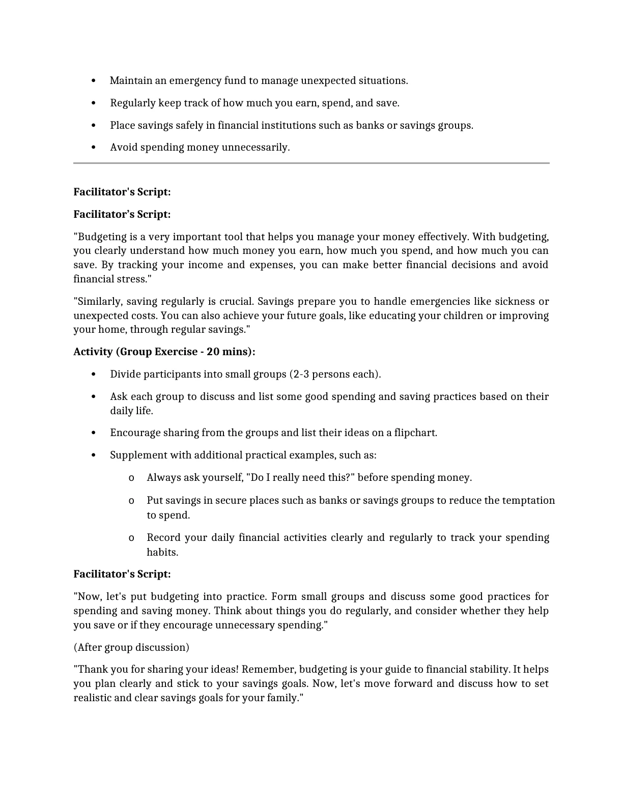
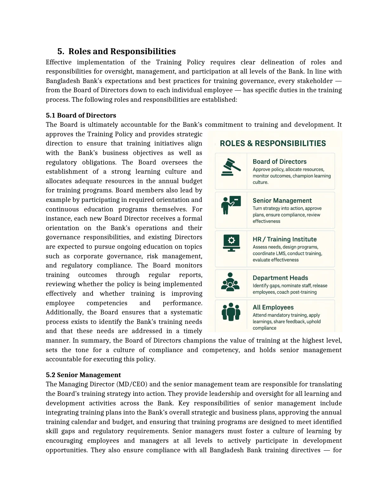
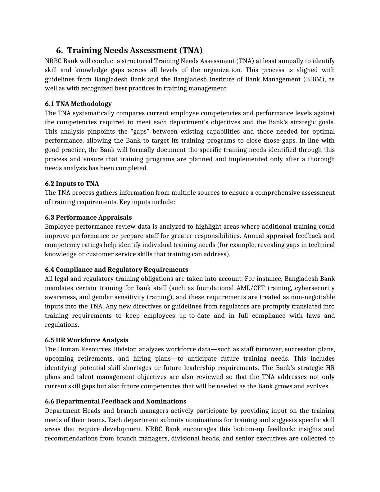
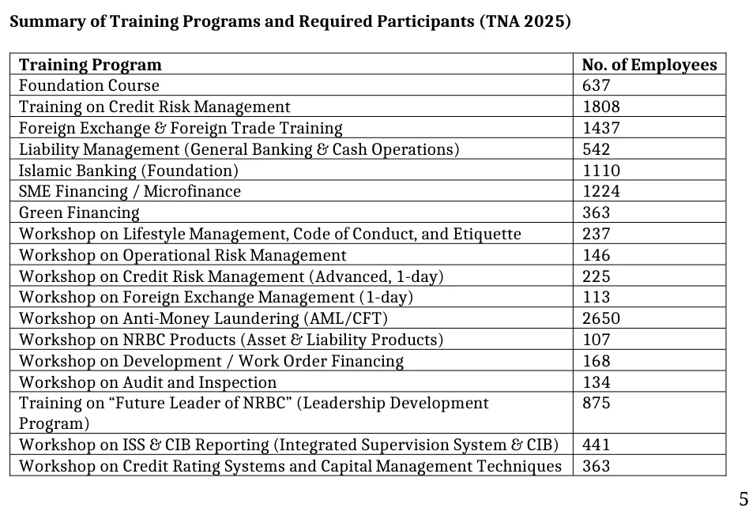
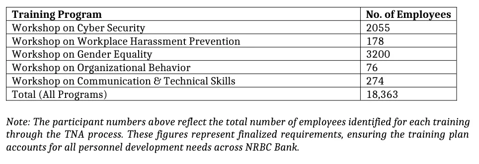
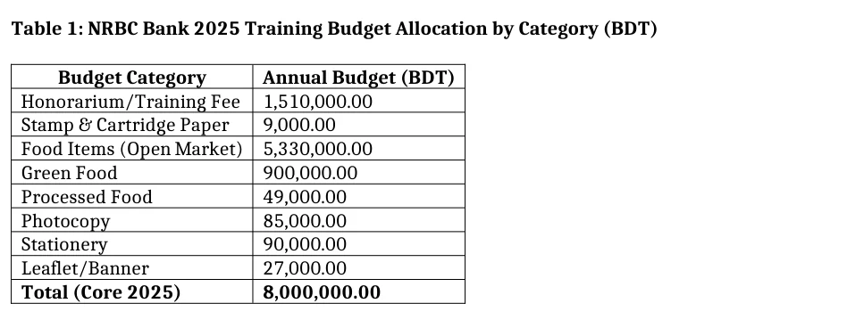

Plan for the lower-income month.
How should a household budget when earnings are seasonal or change from month to month?
COMMUNICATION · LEARNING DESIGN · POLICY DRAFTING · PLANNING
My work at NRBC Bank began with making financial concepts and digital banking understandable. It developed into facilitator-ready modules, a draft training-policy framework and an annual learning plan supported by needs assessment and budget.


Scale from the 2025 Annual Training Plan & Budget. These are planning figures, not delivered training outcomes or a count of unique employees.
01 / WHERE IT STARTED
In the Communication Division, I approached financial literacy through the tasks people needed to carry out: saving, budgeting, making payments, transferring money and understanding financial products.
I developed material around Bangla QR and NRBC Planet with particular attention to mass and rural users. The content connected banking terminology with practical situations that a customer or small merchant could recognise.
For a merchant, the useful question was how to accept a payment. For a customer, it might be how to check an account, transfer funds or pay a bill. Those questions shaped the explanation.
Start with what the person needs to do.
Then explain the banking system behind it.

02 / WHEN CONTENT BECAME CURRICULUM
The next stage changed how I structured the material. A facilitator needed a learning sequence, examples, prompts and activities that could guide a session.
Make the expected understanding or practical skill clear before the explanation begins.
Break financial concepts into manageable topics and examples.
Provide scripts, discussion prompts and guidance for moving between topics.
Use group exercises, savings plans and practical financial decisions.


The modules covered financial-literacy fundamentals, budgeting and saving, savings products, irregular income, goal-oriented financial planning, microfinance and loan management.
Facilitator scripts helped guide the explanation. Group activities asked participants to discuss their spending and saving practices and apply the ideas to situations from their own lives.
Accuracy matters.
So does how people understand and use the information.
03 / DESIGNING FOR REAL FINANCIAL BEHAVIOUR
How should a household budget when earnings are seasonal or change from month to month?
What is the goal, when will the money be needed and how can a practical savings plan be built around it?
What should someone consider before taking a loan, and how can repayment be planned alongside other expenses?
The curriculum connected knowledge with behaviour through discussion, practical exercises and individual financial planning. Knowing something and being able to use it are different learning outcomes.
04 / THE TRANSITION
My move from the Communication Division to the Training Institute expanded the work from customer-facing material to learning needs across employees, functions, grades and locations.
I continued working with topic-based learning content while taking on the framework around it: how needs are identified, programmes are planned, resources are allocated and learning is evaluated.
05 / FROM MODULES TO LEARNING ARCHITECTURE
A bank needs several kinds of development within one coherent framework. The policy and plan connected these learning needs with responsibilities, delivery methods and institutional priorities.
A consistent starting point for newly recruited and junior officers.
Learning for credit, foreign exchange, general banking, SME finance and Islamic banking.
Recurring learning around regulatory topics, operational risk and institutional controls.
Development pathways for future managerial responsibilities.
Communication, workplace conduct, behaviour and practical working skills.
Classroom, online, blended and on-the-job learning modalities.
06 / THE FIRST FORMAL TRAINING POLICY

I helped develop the draft described in its preface as NRBC Bank’s first formal Training Policy. The work brought employee learning into a common framework of needs assessment, planning, delivery, responsibilities, evaluation and records.
The framework connected training with institutional objectives, regulatory learning and employee competency development.
Identify skill, performance and regulatory learning gaps before choosing the response.
Clarify responsibilities across management, HR, the Training Institute, line managers and employees.
Connect classroom, digital and on-the-job learning with professional capability.
Define feedback, learning assessment, application and training documentation.
This case presents policy-drafting and framework-development work. The supplied second draft is the evidence for the policy discussion.

07 / POLICY HAD TO BECOME A PLAN
I worked on the Annual Training Plan and Budget for 2025, connecting identified learning needs with programmes, participant demand and delivery resources.
The plan consolidated needs across the branch and sub-branch network. It made the operational questions visible: prioritisation, batching, locations, delivery capacity, budget and the need to keep banking operations running.
This extended my work from learning content into institutional planning.
08 / LEARNING NEEDS AT ORGANISATIONAL SCALE
The needs assessment brought a wide network into one planning view. Demand extended across technical banking, risk, regulation, leadership and professional skills.
One employee may require several programmes. These numbers describe training demand, not unique people or completed sessions. All 23 source-table values sum to 18,363.


09 / BUDGETING THE LEARNING SYSTEM
Approximately BDT 1.02 crore in the revised annual plan.

The budget connected the plan with the practical requirements of delivery: trainers and resource persons, learning materials, stationery, printing, participant support and programme arrangements.
A separate zonal allocation supported learning beyond Head Office. The planning work therefore had to consider delivery locations and the resources needed to make the programme schedule feasible.
10 / CONNECTING LEARNING WITH THE BANK
Credit risk, operational risk, AML/CFT and audit-related programmes.
Foreign exchange, SME finance, microfinance and Islamic banking.
The planned “Future Leader of NRBC” development programme.
Communication, organisational behaviour, gender equality and workplace conduct.
Green Financing within the identified capability-development needs.
Programmes matched with participant demand, delivery resources and scheduling needs.
11 / ONE CONNECTED SYSTEM
The draft Training Policy provides the governance logic around the chain: responsibilities, delivery standards, evaluation and documentation.
The modules and annual plan make that logic concrete through learning activities, training demand and planned resources.
Listen to the audience and consolidate capability gaps.
Translate technical material into teachable sessions.
Connect priorities, programmes and participant demand.
Connect delivery requirements with budget and locations.
Prepare facilitators, activities and delivery modalities.
Define feedback, application, evidence and the next learning cycle.
12 / WHAT I ACTUALLY BUILT
In the Communication Division, I worked on turning technical banking information into something people could understand. Financial-literacy modules connected that explanation with real financial decisions. Facilitator-ready material added the structure needed for teaching and participation.
At the Training Institute, the same approach extended into policy drafting, annual training planning and budget development. My contribution connected audience understanding, curriculum structure, institutional documentation and operational planning.